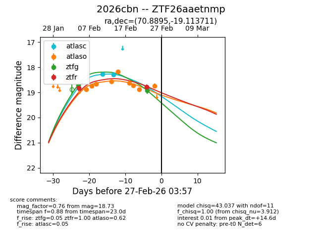
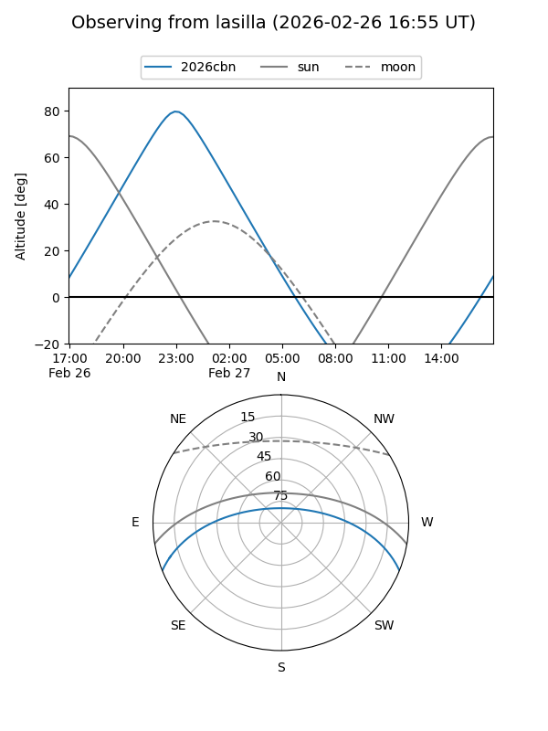
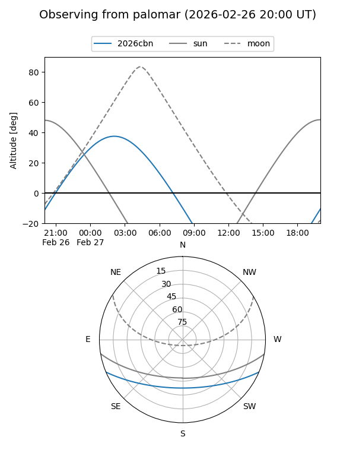
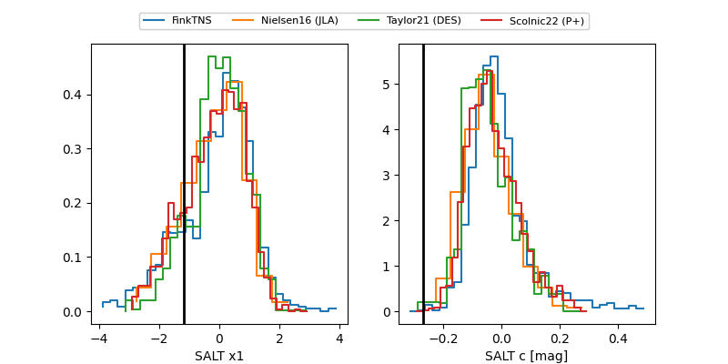

2026cbn
Target 2026cbn at 2026-02-27 03:59
Aliases and brokers:
FINK: link
Lasair: link
ALeRCE: link
TNS: link
YSE: link
alt names
ZTF26aaetnmp (ztf,fink_ztf)
2026cbn (tns,yse)
Coordinates:
equatorial (ra, dec) = 70.8895,-19.11371
equatorial (HMS+DMS) = 04:43:33.49,-19:06:49.36
galactic (l, b) = (217.4472,-36.48104)
Flags:
Photometry:
last atlasc=18.29, atlaso=18.73, ztfg=18.93, ztfr=18.79
2 atlasc, 9 atlaso, 2 ztfg, 2 ztfr detections
Lightcurve

Visibility


Additional plots
